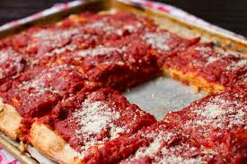

This is a real tomato pie 😛😛

ingredients
- Pie crust
- Tomatoes: You’ll need four large (peeled and sliced) tomatoes.
- Bacon: Cooked, drained, and chopped bacon lends meaty flavor.
- Green onions: Green onions add a bright pop of flavor and color.
-
Seasonings: Season the tomato pie with fresh basil, dried oregano,
garlic powder, and crushed red pepper.
- Shredded Cheddar cheese makes the tomato pie extra indulgent.
-
Mayonnaise: Mayonnaise gives the tomato pie creaminess and adds tangy
flavor.
directiones
-
Add all the ingredients (besides the cheese and mayo) to the pie crust.
-
Mix the cheese and mayo together and spread the mixture over the
filling.
-
Cover with foil and bake for 30 minutes, uncover, and bake for 30 more
minutes.